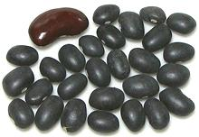
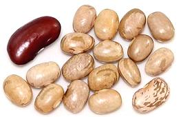
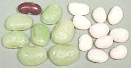
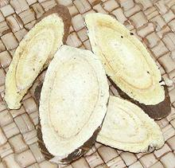
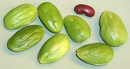
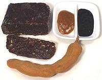
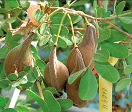

SAFARI
Users
- American Beans - Genus
Phaseolus now grown worldwide.
- Common Beans P. vulgaris
- Green Beans, etc. P. vulgaris
- Lima Beans P. lunatus
- Runner Beans P. coccineus
- Asian / African Beans -
Genus Vigna, Cowpeas, etc.
- Vigna Beans - Mung beans, etc.
- Cowpeas - Blackeye peas, Long Beans, etc.
- Lablab Beans - Val. Very important in Africa and India.
- Pigeon Peas - Most important bean in India.
- Dal - Peeled & split Beans, Peas & Lentils.
- Gram - Terminology used in India
- Lentils - Important in Eurasian cultivation for at least 9000 years.
- Peas - Cultivated in the eastern Mediterranean region for 7000 years.
- Peanuts / Groundnuts - South American and African.
- Chickpeas / Garbanzos - Genus Cicer - extremely important from Neolithic times.
- Fava Beans / Broad Beans - Formerly the most important bean in Europe.
- Soybeans - Val, important particularly in India and Africa.
- Other Popular Beans - Alphabetical Listing.
Exotic Varieties
- Very difficult to find in North America.- Working with Legumes - Prep and Cooking Beans, Peas & Lentils
- Bean Family Tree - For the botanically inclined.
- Order Fabales - Overview
American Beans
[Genus Phaseolus] All these beans, now so well known worldwide, were unknown in Europe, Africa and Asia until European traders brought them from Central and South America. All mature beans in this genus are at least somewhat toxic raw or dried. They are safe to eat when boiled for about 10 minutes.
Common Beans
[Phaseolus vulgaris] From about 1500CE, These beans spread quickly from the Americas to the rest of the world, where some varieties have become associated with particular countries.
Anasazi Beans[New Mexico cave beans, Aztec beans, New Mexico appaloosas, Jacob's Cattle beans.] These beans may or may not have been grown by the ancient Anasazi in the US Southwest, but the unconfirmed story that they were found in a cave by archaeologists, then sprouted, is pure marketing fantasy - even 50 year old beans won't sprout, never mind 800+ year old beans. In any case, they are a sweet tender bean with a thin skin and good light flavor - a good choice for salads as they absorb dressings well. They cooks faster than most beans (45 min for presoaked), and are
reputed to be only 25% as fart inducing as the related Pinto Beans.
Unfortunately they lose their color pattern when cooked, turning to
all pink. One cup produces 1-1/2 cup soaked and cooked. The photo
specimens were 0.52 inch long by 0.23 inch thick (13.2 x 5.8 mm),
available on-line from various sources for about 2016 US $4.50 per
pound.
Black Beans [Turtle bean, Frijole Negro]
Essential to the cooking of Southern Mexico, Central America and the
Caribbean, this bean is second only to Carioca beans in Brazil, except in
Rio de Janeiro where black beans prevail. Their earthy flavor invites
strong seasonings and in Mexico's Yucatan region they are often seasoned
with the powerful herb Epezota. The photo specimens were typically 0.38
inches long and 0.24 inch wide (9.7 x 6.1 mm), but some cultivars are a
little larger. Soaked beans will cook in 45 minutes with 1 cup becoming
2-1/2 cups. Unsoaked time will be a little more than 1-1/2 hours.
Cannellini Beans[White Kidney bean, Fazolia bean; Alubias (Mexico)] These beans were developed in Argentina, but the huge Italian community in that country soon exported them to Italy, where they are very poplar, especially in Tuscany. Italian markets here in Southern California stock them imported from Italy at absurd prices. They are also grown in North America, where most are canned, but dried are also available, and will be fresher than imported. The photo specimens, 0.66 inch long by 0.33 inch wide (15.7 x 8.4 mm), were from Bob's Red Mill, purchased for 2016 U.S. $5.66, still pretty expensive for dried beans. Caution: While White Kidney Beans are not as toxic,
as Red Kidney Beans, they should probably not be cooked in a slow
cooker, especially at low setting. They can end up five times
more toxic cooked at slow cooker temperatures. They are
sufficiently detoxed cooked at boiling temperatures for 10 minutes,
but longer is recommended.
Carioca Beans [Frijole Carioca (Brazil)] This is the most important bean in Brazil, the default bean everywhere except in Rio de Janeiro State where Black Beans prevail. They are often compared to Pinto Beans, so, for comparison, there is a Pinto Bean at the bottom right of our photo. The Cariocas are quite a bit smaller, cook to a lighter color than Pintos, and have a lighter taste. On the other hand, our Pinto Beans have been extensively market tested in Brazil and found to be a satisfactory substitute. The photo specimens were typically 0.41 inch long, 0.27 inch wide, and
0.25 inch thick (10.4 x 6.9 x 6.4 mm). Soaked beans will be cooked through
in 45 minutes, and be just a shade firm. At 50 minutes they are not much
different, but start to break up. 1 cup becomes 2-1/2 cups. Unsoaked time
will be a little more than 1-1/2 hours.
Cranberry Beans / Borlotti Beans[Cargamanto, Granados (Chile), Cargamanto (Colombia)]
Originating in Colombia, these large, plump beans are very popular in Italy.
If grown in Italy, they are Barlotti Beans, but many sold as such in Italy
would be properly called Cranberry Beans, because they are imported from the
Americas. Borlottis are available at absurd prices in Italian markets here
in Southern California, but are fresher and cheaper as Cranberry Beams grown
in the Americas. In Colombia they also have Red Cranberry Beans
(Cargamanto Rojo), Cranberry Beans have a creamy texture and a flavor often
compared to chestnuts. The photo specimens were 0.62 inch long by 0.37 inch
wide and 0.27 inch thick (16.8 x 9.4 x 6.9 mm).
Dragon Tongue BeansThese are a variegated variety of Romano bean. Clearly the photo specimens have been too long on the shelf, so why didn't I wait for fresh ones? This sort of stuff is only put on the shelf when a newly remodeled supermarket opens - to impress the rubes with how much better it is now. After opening week you'll never see them again. Basically, they taste just like green romano beans so why would anyone want to pay three times as much for them? Well, maybe for salads. Flor de MayoThese beans, native to Mexico, have a high reputation for both taste and texture. They are variable in color, with most a mottled brown-purple, but others tan or light brown. The photo specimens, purchased from a Latino market in Los Angeles, were typically 0.47 inch long and 0.29 inch wide (11.9 x 7.4 mm). Great Northern Beans[White Beans]
A medium size (0.5 to 0.6 inch long dried) white bean mildly flavored
and reasonably firm. It's used for many North American bean recipes
and as a substitute for the smaller Navy Beans in
Boston baked beans. These beans are ideal for providing volume and a
background for other flavors, but if you want to feature bean flavor
use red or pink beans. Pre-soak 8-hrs, cook 1-1/4 hr (2-1/2 hours if
not pre-soaked).
Green Beans[String Beans / Snap Beans, French Beans, Haricot Verts]
"Green Beans" aren't always green, as you can see from the photo
specimens. The dark purple ones are fine raw in salads but if you are
going to cook them don't pay extra for the color - they come out green.
The yellow ones do remain yellow though.
Details and Cooking.
Kidney Bean, Red[Rajma (India)] This fairly large bean is one of the most popular New World beans all around the world. The photo specimens were sold as "Dark" and "Light", but they get darker and lighter than these. Yes, that's our famous Red Kidney Bean at the top, joining in for a family portrait. Indian markets will have the widest range from very dark to very light. Dried Kidney Beans run about 0.65 inch long by 0.31 inch wide (16.5 x 8.0 mm) Both standard and light are available canned. Caution: Fresh or dried Red Kidney Beans are quite toxic, but are detoxed by boiling - however, they should never be cooked in a slow cooker, especially at low setting. Not only will they not be detoxed, but the toxicity can become five times greater. Boil you Red Kidney Beans on the stovetop. They are sufficiently detoxed in 10 minutes, but longer is recommended. You can add them to your slow cooker recipe when they are safe. One cup of dried beans weighing just under 1/2 pound will weigh
1 pound soaked overnight, which will also be the cooked weight. Cooked
volume will be 3 cups. Cooking time for presoaked beans can be as
short as 45 minutes for fresh beans soaked with some salt - or as long
as 1-1/2 hours depending on age and how tender you want them.
Old beans won't cook tender in 8 hours. A 14 ounce can of red kidney
beans yields about 8-1/2 ounces of drained beans, about 1-1/2 cups -
equivalent to about 4-1/4 ounces of dried beans.
Kidney Bean, White- see Canellini Beans.Manteca Beans[Prim Bean, Butter Bean]
Long grown in Chile, these beans have been getting a lot of attention
their reported characteristics of being easily digestible and not
producing flatulence. A researcher, Dr. Colin Leakey, has developed a
hybrid version that can be grown in England, and it is much in the
news there (2012). Here in California we can grow the regular ones.
The fartless feature is said to be the result of tannins in the seed
coat. The photo specimens, purchased at a large farmer's market in
Pasadena, California, were 0.47 inch long, 0.40 inch wide and 0.34
inch thick.
Navy Bean[White bean, Boston bean, Pea bean, Haricot blanc, Fagioli]
This name usually refers to a dried pure white bean about about .312
inch long which is substantially smaller than the
Great Northern but similarly mild in flavor. These are the
traditional bean for Boston Baked Beans. Navy beans are ideal to
provide volume and act as a transport for featured flavors other than
the beans (molasses in the case of Boston Beans). If you're featuring
bean flavor, use red or pink beans. Pre-soak 6-8 hrs, cook 1 hr
(2 hrs if not pre-soaked).
Orca BeanThis is a pretty new bean on the market. Unlike many beans with interesting colors and patterns, this one does not completely lose them when cooked, but they are much toned down. The white has become beige and the black dark brown. Watch the cooking time. Presoaked beans that are fairly fresh can be completely cooked in just 30 min. Pre-soak 8 hrs or overnight in lightly salted water. The photo specimens, from Bob's Red Mill, were 0.43 inch long and 0.25 inch wide (11.0 x 6.4 mm). They were purchased from a Yuppie outlet in Los Angeles (Glendale) for 2016 US $2.99 per pound. Peruvian Bean-[Canary Bean, Peruano bean, Canaria bean, Mayocoba bean, Azufrado bean]
This medium size bean can easily be told from white beans by it's
smooth shiny plumpness and distinctly yellow-greenish cast. It is
very popular in southern Mexico and Central America, though also
grown in Peru and the United States. It is particularly liked for its
creamy texture, plump meatiness and thin skin. It is excellent for
refried beans. The photo specimens, purchased from a large Hispanic
market in Los Angeles (Burbank) for 2017 US $1.29 / pound were
typically 0.55 inch long and 0.31 inch wide (14.0 x 8.0 mm). They
need to be soaked 8 hours or overnight in lightly salted water,
then simmered about 1/2 hour. Unsoaked they'll need as much as 1-1/4
to 1-1/2 hours, but the result isn't as nice as they start to break
up with loose skins.
Pink BeansPink beans taste a lot like Red Beans, but in our tests they cooked a bit faster and broke up a lot more, indicating they have thinner skins, so are ideal for purées and other recipes where the beans will be broken up. Pink beans have a deeper bean flavor than White Beans so whites are better as a neutral background and pink for more intense bean flavor. Presoak 8 hrs, cook 1-1/4 hrs (2-1/2 hrs if not pre-soaked). The photo specimens were typically 0.50 inch long and 0.31 inch wide (12.7 x 8.0 mm). Pinto Bean[Porotos hallados (Chile)] This bean is most familiar from U.S. Southwest / Mexican cooking - for
"refried beans" bean buritos, and the like. When cooked it loses its
mottled color and becomes a uniform pinkish color but has good strong
bean flavor. Presoak 8 hours - 1 cup beans needs about 1-3/4 cups of
water and will yield 2-1/2 cups of soaked beans. About 2/3 cup will be
a little more than one 15 oz can of canned beans. Fully soaked beans will
cook in about 45 minutes. The photo specimens were typically 0.48 inch
long by 0.34 inch wide (12.2 x 8.6 mm).
Red Silk Beans / Salvadoran Red Beans[Silk Beans; Frijol Rojo de Seda (Spanish)] These beans are very popular in El Salvador and also in other Central American countries. They are easily available in most of North America, as Goya distributes them under their brand. The dried beans are small, typically 0.54 inches long, 0.29 inch wide, 0.21 inch thick. They have fairly tough skins, so should be soaked in moderately salted water for at least 8 hours before cooking. The fresh shell beans in the pod (Frijol de Seda Fresco), on
the other hand, are found only in specialty markets when in season.
The photo specimens were purchased in late August from a large
Hispanic market in Los Angeles (Burbank) that specializes in Mexican,
South American and Central American foods. They sold at 2017 US $2.99 /
pound. The pods were typically 5.4 inches long, 0.53 inch wide and
0.35 inch thick. The fresh beans were typically 0.64 inch long,
0.39 inch wide, 0.25 inch thick. Yield of edible beans from 1
pound of pods was 0.5 pounds (50%).
Romano Bean[Italian Flat Bean]
In North America, Romano Beans are almost always sold as a green
"snap beans", though yellow and purple varieties also exist. Flavor is
a little different from the round and flat string beans but not so
much as to prevent substitution - just be careful not to overcook as
romanos can become mushy. These beans can, of course, be allowed to
mature and dry but there's no point as there are plenty of other
average size white beans. As green beans, romanos fetch a premium
price. The photo specimens are above average in size, the largest
being 11-1/2 inches long, 1 inch wide and weighing just over 1 ounce.
Despite the size they were still quite tender.
|
Lima Beans
[Butter Beans (UK, US South, Culinary), Sieva bean, Haba bean, Chad bean, Pallar bean, Burma bean, Duffin bean, Hibbert bean, Java bean, Rangoon bean, Madagascar bean, Paiga, Paigya, Phaseolus lunatus]
Lima beans are so called because Europeans first shipped them from Lima, Peru. There were apparently two separate domestication events. Small flat ones probably originated in Guatemala where a wild variety has been found. The larger, thicker beans originated in South America, probably Peru, Lima bean pods are flat and moderately curved with from 2 to 4 seeds per pod. Limas range from the large "Fordhook" variety grown in California to small cyanide laced varieties in the Caribbean. The U.S. and some other countries allow growing only low cyanide beans but many grown in Southeast Asia require thorough cooking to drive off hydrogen cyanide gas.
The pods are often toxic and don't taste good so they are not used for food. Limas are not much used in Europe because the warm growing climate required is not available there, but are popular in Africa and India.
Lima beans are an excellent source of molybdenum, a very good source of manganese and dietary fiber, and a good sources of foliate, protein, potassium, iron, copper, phosphorous, magnesium and thiamin
Lima Bean - Large Seed[Garrofón (Spain); Double Bean (India); P. lunatus var. limensis (formerly P. Limensis)]
Possibly originating in Peru and brought to the U.S. and Europe from
Lima, Peru, these beans were once the largest agricultural crop in
California but have been in decline - undeservedly in my opinion.
"Fordhook" is the dominant variety. These beans are widely grown but
most production is in California due to ideal weather. Available dried,
frozen or canned (previously dried). The photo shows dried and frozen
fordhooks with our famous dried red kidney bean for scale. The top center
bean was 1.05 inches long, 0.75 inches high and 0.4 inches thick.
Lima Bean - Small Seed [Sieva bean, Butterbean, Rangooni Val / Flat Val (India), P. lunatus var. lunonnus]
Probably originating in Guatemala, these were brought to North America
in pre-Columbian times and are grown mainly in the U.S. Southern States.
The seed is much smaller and flatter than the California Fordhook and
may be streaked with red or purple (Christmas, Florida Speckled, Jackson
Wonder). There is a variety called "Butter Pea" which is shaped more like
a pea than a bean. Locally available fresh.
Butter BeanThis is an inexact term, and can be applied to just about any lima bean. In most of the world it is used for large white beans, but in the United States it varies by region. Most of the U.S. uses "Butter beans" for small varieties but in the Carolinas it is the larger ones. In culinary usage, "Butter Beans" generally means the large yellowish ones, and "Lima Beans" means the small green ones. Butter Bean - Canned, USA[Lima Bean, P. lunatus var. limensis]
This is simply the Large Seed Lima Bean cooked and canned. A 14 ounce can
holds about 9-3/4 ounces. These are very good option when it is important
your beans all be plump and completely intact, as these were (Goya brand).
They average around 1.10 x 0.75 x 0.4 inches (28 x 19 x 10 mm).
Butter Bean - Frozen, USA[Lima Bean, P. lunatus var. lunonnus]
This is actually the same as "Lima Bean - Small Seed" above but a purple -
tan mottled variety marketed frozen as "Butter Beans" to differentiate
them from the green varieties, now mostly called "Baby Limas". The flavor
is pretty much the same. The photo specimens were previously frozen and
measure from 1/2 inch to 7/8 inches long.
"Baby" Lima BeanThis is a confused term. Often sold frozen, these are not actually babies but are fully mature small Lima Beans. "Baby" is a marketing term used because Yuppies will buy anything labeled "baby", even "baby carrots" machine cut and formed from large carrots. Most are cultivar Henderson or derivatives but there are also dwarf versions of Fordhook (thicker seed). The original Henderson, a small seed lima, was found growing by a roadside in Virginia, but most commercial production of "baby limas" is now in California. Henderson derivatives Thorogreen and Thaxter predominate, along with some dwarf Fordhooks. Available frozen, dried or canned (previously dried). Lima Bean - Giant White[Lima Bean, P. lunatus var. limensis]
The photo specimens were purchased from an Indian market in Los Angeles
(Glendale). The largest dried one in the photo was 1.10 x 0.79 x 0.28
inches (28 x 20 x 7 mm). The largest soaked was 1.56 x 1.05 x 0.43 inches
(40 x 26 x 11 mm). Soaking time should be at least 14 hours in lightly
salted water, and soaked weight will be about twice dried weight. Cooking
time should be at a fast simmer for 45 to 50 minutes. Some may still be a
bit firm, but by an hour some will have started to break up.
|
Runner Beans
[Pole beans, Scarlet runner bean, Oregon lima bean; Ayocotl (Nahuatl); Ayocote (Spanish); Fasolia Gigantes (Greece); Judiones de la Grnja (Spain); Käferbohnen (Austria - colored ones); Phaseolus coccineus]
Originating in the mountains of Central America about 4000 years ago, this bean is now popular in Greece and Iraq. In North America it is grown mostly as a decorative vine for its red flowers, but it is starting to move into the vegetable garden. For some reason it is no longer as commonly used in Central America as it was in Pre-Columbian times.
Runner beans are perennial vines with edible starchy root tubers, which are still eaten by some Central American Indians. The vines usually have scarlet flowers and multi-colored seeds, but there are also white flowered varieties that produce white seeds. Young pods that are not yet fibrous can be cooked and eaten whole.
Ayocote Negro[Giant Black Bean] These beans were purchased from a Latin American specialties market in
Los Angeles (Burbank). They were typically 0.89 inch long, 0.49 inch wide
and 0.36 inch thick. The photo includes our ubiquitous red kidney bean for
scale.
Eye of the Goat[Frijoles Ojo de Cabra (Spanish); Phaseolus coccineus] Related to the Scarlet Runner Bean, these originated in Central America, but are now grown in the United States and elsewhere. They are also grown as a decorative as they are perennial with showy flowers. The photo specimens were from Armenia, purchased from a multi-ethnic market in Los Angeles (Sunland) for 2021 US $4.53 / pound. I found them on the Internet, also from Armenia, for $27.33 / pound. Rancho Gordo has them grown in North America for 2021 US $6.95 / pound, when they have them.
These beans varied in size but were up to 0.775 inch long, 0.450 inch
wide and 0.275 inch thick. They need to be soaked overnight in moderately
salty water and simmered for an hour. Unsoaked, simmer up to 2-1/2 hours.
Pressure cook about 20 minutes. They have thin skins, but hold their shape
and color when cooked, and are noted for a creamy texture.
Gigantes[Giant White Bean; Gigantes (Greece); Judón de La Granja (Spain)] This is an important bean in Greece, with some DOM regional varieties.
It is often served in a tomato sauce (Gigantes Plaki). It is also important
in Segovia, Spain. Soaking time should be in lightly salted water for at
least 14 hours. Cooking time is about 1 hour simmering. The photo specimens
(dried to the left, soaked to the right) were purchased on-line for 2021 US
$10.24 for 500gms (17.6 oz), product of Greece. Dried they were 1.16 x 0.64
x 0.39 inches (29 x 16 x 10 mm). Soaked they were 1.34 x 0.90 x 0.51 inches
(34 x 23 x 13 mm) and a little over double the weight.
|
Santa Rita Mountain Beans
[Phaseolus acutifolius]
These beans are native to Arizona in the United States, and Sonora,
Chihuahua, Sinaloa and Nuevo León Mexico. Growing in mountain
forests, they have been important to local populations. Whole green pods
are eaten as a vegetable when young, and the beans when mature. The
beans in the photo are about 0.4 inch wide.
Photo from U.S. Department of Agriculture = Public Domain
.
Tepary Beans
[Pawi, Pavi, Tepari, Escomite, Yori mui, Yorimuni, Yori muni; Phaseolus acutifolius]
These beans are native to the southwestern United States and Mexico. They
are much more drought tolerant than the common beans, and are grown in
semi-desert regions from Arizona through Mexico to Costa Rica. Beans can
be any color and vary in size, but are usually small - the larger photo
specimen is 0.35 inch long. Tepary beans are now also cultivated in a
number of African countries, India, Asia and Australia.
Photo from U.S. Department of Agriculture = Public Domain
.
Asian & African Beans
We list these together because there has been thousands of years of cross-culture trade between India and Africa, so many thing have spread from one side to the other.
Vigna Beans & Cowpeas
[Genus Vigna] While common beans from the New World have been widely adopted, these beans have been harvested in India and Africa since prehistoric times and were probably taken to China from India. They remain in common use for many recipes. A few members of the cowpea species appear to be native to Africa, and were brought to the American South with the slave trade.
Cowpeas[Vigna unguiculata] Cowpeas are very important crops in the drier areas of the tropics, particularly in Africa and India. They tolerate poor soil and rather dry conditions compared to other beans. They are shade tolerant so can be interplanted with corn and other grain crops. This is very important because their protein profile complements that of grains, the two making up for each other's shortcomings in human nutrition. They also contribute nitrogen to the soil, helping non-legume crops grow better.
Vigna Beans - OtherThese originated in India, perhaps Southeast Asia, and were probably carried to China in prehistoric times. They remain very important throughout the Asia as the basis for a great many recipes, both traditional and modern.
|

 [Vigna umbellata]
[Vigna umbellata]
Lablab Beans
[Field Beans; Val, Valor, Sem ki phalli (India); Broad Beans (India, but most elsewhere that name refers to Fava Beans); Chapparadavare, Chikkadikai (Kannada); Avari, Avarakkai, Mochai (Tamil); Anumulu, Chikkudu (Telugu); Mochakotta (Malayalam); Sem, Ballar (Hindi); Val Papdi (Gujarati); Sabre Beans (some Indian Cookbooks in English); Tonga bean, Papaya bean, Poor man bean (Australia); Fiwi bean, Kikuyu bean, Lubia bean (Africa); Bounavista pea (Trinidad); Butter bean (Caribbean); Gallinita (Mexico); Ataque (France); Fuji-mame (Japan); Gerenge (Ethiopia); Helmbohne (Germany); Gueshrangaig (Egypt); Louria (Cyprus); Lablab purpureus alt Dolichos lablab]These beans are native to Africa, where they are widely grown. They were carried from there to India and on to Southeast Asia thousands of years ago. There is only one species in this genus, but there are a number of cultivars in different shapes and colors. Beans of this type are easy to recognize by the very prominent seed scar on one edge.
These beans are grown for animal fodder, human food and medicinal uses. Young greens can be eaten raw in salads, or cooked as greens. Young pods can also be eaten, generally cut up and cooked. Flowers are eaten raw. Mature beans, depending on variety, can contain a fair amount of cyanide (they'll be bitter), so need fairly long cooking in an open pot to drive it off. The beans are also used in Southeast Asia to make tofu and tempeh.
Hyacinth Bean[Fiwi (Swahili) Lablab purpureus] This variety obviously gets its name from the bright purple color. It is widely grown both for food and as an ornamental for its brilliant purple flowers and pods (the ones in the photo are a bit faded). The seeds are shown in several stages of maturing: green, starting
to turn color, and purple. The purple ones came from a dried pod, the
others from pods like those in the photo. The largest pod was 2-3/4
inches long and 15/16 inch across. The largest green bean was 0.63
inches long and the largest purple was 0.5 inches long, but would get
smaller when fully dry.
ValThis variety is the most common commercial lablab bean in India. It has white flowers, green pods and light colored seeds. In southern India they are very popular young, when they are cut up and cooked as a vegetable. Those in Indian markets around here are usually too mature for that use and have tough pods and tough skins on the beans, which must be shelled and peeled. The most convenient for cooking is the dal, which is already peeled. The photo shows Val Dal (peeled and split) at the top, whole dried
Val, bottom left, fresh beans, bottom right and whole pods, right.
Kodava ValThis is a smaller, darker variety common to the southern Indian state of Karnataka. Because the skin is tough, this variety is often first sprouted, then peeled. This is rather a hassle, but the flavor is very good. The photo shows Kodava Val sprouted (left) and dried before sprouting
(right). In India beans are normally sprouted only as far as is shown,
not fully as in China.
|
Pigeon Peas
[Gandule, Grandul, Alverja (Spanish); Guandu (Portugal); Toor, Tur, Tuvar, Red Gram, Arhar (India); Congo Pea, Gunga Pea, No-eye Pea; Pois d'Angole (France); Cajanus cajan]
Probably originating in India, pigeon peas were established in East Africa thousands of years ago and were brought to the Caribbean with the slave trade. They are now grown in all tropical and semi-tropical regions of the world but until recently were almost unknown in the United States.
Pigeon peas are important in Africa, Caribbean and Central American
cuisines, and essential to the cuisines of southern India where Toor Dal
is the basic ingredient for sambars and many other dishes. The "red" in
Red Gram refers to the color of the flowers. The photo shows oiled dal
(peeled and split), dry dal, whole dried peas, whole fresh peas and
whole ripe pods. The whole dried are often sprouted
before cooking. Details &
Cooking
Dal
[Dal, Dahl, Daal (India)]
"Dal" most often means the split and peeled form of a bean, pea or lentil, but not always, and this ambiguity can make Indian recipes difficult to interpret. The opposite of "Dal" is "Sabut", which means whole beans, peas or lentils. "Sabut" usually appears before the name, as in "sabut moong" vs. "moong dal".
Generally, if the recipe calls for soaking for more than an hour
before cooking, or cooking for more than an hour, it means the whole
unpeeled item (gram). If there is no soaking time called for and the
cooking time is less than an hour you can presume the split and peeled
form. Splitting and peeling shortens the needed soak and cooking time
drastically, makes the flavor more delicate and the dish more refined
in texture (no tough skins in it). Pressure cookers are very popular
in India, especially for cooking beans, as they shorten the cooking
time and reduce the amount of fuel needed.
- Arhar Dal - See Toor Dal
- Chana Dal - Desi Chickpeas split and peeled.
- Chori Dal - peeled and split Red Chori.
- Chowli Dal - peeled and split Black-eyed peas (not common).
- Dhana Dal - not a bean or lentil at all. The familiar round coriander "seed" (which is actually a fruit containing seeds) is husked leaving only the actual seeds, which are then roasted. The resulting product has a unique and attractive flavor. Calling it "dal" was a failed attempt to avoid taxes on spices.
- Masoor Dal - small salmon colored lentils, peeled but may or may not be split. See Masoor & Red Lentils. These are pretty much interchangeable with Egyptian Lentils (the common grocery store "Red Lentils") which are somewhat larger. Both turn golden yellow when cooked.
- Matar Dal - Split and peeled dried Yellow Peas.
- Matar ki Dal - Split and peeled dried Green Peas.
- Moong Dal is the Mung Bean split and peeled. With the dark green skin gone it is a light yellow-beige color. Moong dal is one of the most used pulses in India.
- Motor Dal - Bengali for Split and peeled dried Yellow Peas.
- Toor Dal / Tuvar Dal / Arhar Dal - Pigeon Peas, peeled and split. Some versions are coated with oil as a preservative. The oil needs to be washed off for use. Toor is one of the most widely used dals in India, especially in the south.
- Urad Dal is the black Urad Bean split and peeled. It is ivory white in color, and also called White Lentil.
- Val Dal is peeled and split Lablab Beans.
Gram
This terminology is used in India, and generally means the whole unpeeled seed of a bean, pea or lentil, but is ambiguously used and may mean a peeled and split seed, particularly in the case of "Yellow Gram". Dal is the more proper term for the peeled and split form but may also be used ambiguously and may mean the whole unpeeled seed.
- Bengal Gram - Chana (small Chick Peas).
- Black Gram - Urad Beans.
- Green Gram - Mung Beans (Moong).
- Horse Gram - Horse Gram.
- Red Gram - Pigeon Peas (Toor, Tuvar) - after the red flowers.
- Yellow Gram - Most commonly Chana but also used for Moong Dal because of its yellow color peeled.
Lentils
[Lens culinaris] Probably originating in Turkey and/or Syria, these pulses are smaller than most beans and disk shaped rather than bean shaped. Optical lenses take their name from this shape. Lentils were one of the very first cultivated crops, probably more than 9000 years ago, and are now grown worldwide with varieties in different sizes and colors. They are commonly sold dried: whole, peeled, and peeled and split. Cooking times are less than for beans, particularly in dal (peeled and split) form so whole lentils are soaked for less time than beans and peas, and dal form is often not soaked before cooking. In India small beans of genus Vigna are sometimes called "lentils".Lentils are high in fiber and protein, and significant sources of folate, thiamin, pantothenic acid, vitamin B6, phosphorus, iron and zinc. The largest growers and exporters of lentils are Canada (33%) and India (25%). Australia, Turkey and Nepal are also significant growers.
Black Lentils[Beluga lentil] These tiny lentils are similar to Puy Lentils
but are smaller and most are black rather than mottled, though a few
mottled ones are likely to be in the batch. They hold their shape well
and become shiny black when cooked, thus the name "beluga" after the
black caviar. They are particularly used as an ingredient in salads
and soups because they stay whole and firm. Cooking time for unsoaked
Black Lentils is about 40 minutes. As with many other lentils there
are large and small varieties (actually small and really small). The
photo specimens were typically 0.14 inch diameter and 0.09 inch
thick (3.6 x 2.3 mm).
Egyptian Lentils An inexact term but usually referring to either
Masoor Dal or Red Lentil,
but sometimes to others including Brown Lentils.
The photo shows Masoor Dal (left) and Red Lentils (right).
The two are pretty much interchangeable in recipes.
Details and Cooking.
An inexact term but usually referring to either
Masoor Dal or Red Lentil,
but sometimes to others including Brown Lentils.
The photo shows Masoor Dal (left) and Red Lentils (right).
The two are pretty much interchangeable in recipes.
Details and Cooking.
French Green Lentils[French style green lentils]
These are pretty much the same as Puy Lentils
grown outside the Le Puy region, particularly in Canada. To me they
appear fresher, and are definitely greener, but have the same
mottling These lentils are often used in salads and soups because
they stay firm and intact when cooked. Cooking time for unsoaked
French Green Lentils is about 40 minutes, and 1/4 cup will yield
nearly 1-3/4 cups. The photo specimens were typically 0.18 inch
diameter and 0.08 inch thick (4.6 x 2.0 mm). Subst:
Black Lentils will work well.
Green LentilsThis is your common lentil in North America, most grown in Canada, (lentils are a cold weather crop). There are three basic sizes, large (Laird type), medium (Richlea type), and small (Eston type). It is most sold whole but also in the peeled and split form which is a medium yellow color and, since Dal is not yet a common word in American English, called "Yellow Lentils". I use mostly the small, because they hold their shape much better. The photo specimens are large to the left, typically 0.25 inch
diameter and 0.08 inch thick (6.4 x 2.0 mm), small to the right,
typically 0.18 inch diameter and 0.09 inch thick (4.6 x 2.3 mm) with
Yellow Lentils in the center, typically 0.18 inch diameter by 0.05
inch thick (4.6 x 1.3 mm). If you pre-soak these whole lentils use
2 cups water to 1 cup lentils and soak for about 4 hours. Hulled
and/or split lentils are seldom soaked before cooking.
Masoor / Masoor Dal[Brown Lentil (whole)]
Similar to the Red Lentil but lighter in color
and smaller than some varieties. It is sold whole, peeled and peeled
and split (masoor dal). Masoor dal is often cooked mixed with rice
because the cooking time is about the same. If a recipe calls for
masoor to be soaked at all it probably means whole masoor, otherwise
probably dal. Cooked masoor dal will turn a bright yellow color as
will red lentils. Dal size is about 0.17 inch (4.3 mm) diameter.
Subst: Red Lentils (may be larger and cook a touch longer).
Details and Cooking.
Pardina Lentils[Spanish Brown Lentil]
While grown as a significant crop in Canada and the U.S., the largest
portion of production is exported to Spain where these lentils are
popular.
Photo borrowed from
Pulse Canada.
Puy Lentils[French green lentil; Verte du Puy (France)]
These small gray-green mottled lentils, grown in the volcanic soil
of Le Puy, France are DOM in the EU, and AOC in France, so none
grown outside the Le Puy region can be called "Puy". They are
usually sold at high prices by gourmet outlets. These lentils are
often used in salads and soups because they stay firm and intact
when cooked. Cooking time for unsoaked Puy Lentils is about 40 minutes.
Very similar lentils are grown in North America, particularly Canada,
as "French Green Lentils".
The photo specimens were typically 0.18 inch diameter and 0.08 inch
thick (4.6 x 2.0 mm). Subst: French Green
Lentils are the obvious choice, but Black
Lentils will also work well.
Red LentilsThese lentils are similar to Masoor but can be a bit larger and/or darker in color. The most popular cultivar in the U.S. and Canada is Red Chief (left in photo), up to 0.24 inch (6.1 mm) diameter. The small, darker colored lentils to the right are from Turkey, about 0.17 inch (4.3 mm). These lentils are almost always sold peeled or peeled and split to show off their salmon color. Red Chief is a light tan before peeling. Raw "red lentils" are actually orange, and cooked they will be a bright yellow color, as will masoor dal. Subst: Masoor Dal. Details and Cooking. Tarahumara Pinks
White Lentils (India) are not lentils at all, but rather the split and peeled Urad Bean Yellow Lentils are the peeled and split form of the larger types of Green Lentil. |
Peas
[Matar (Hindi), Vatana (Gurgarati), Pisum sativum] Peas probably originated in Turkey and spread right along with neolithic agriculture. They were first brought to the Americas by European explorers. Peas are called "Fresh Peas" when sold fresh, canned or frozen, "Field Peas" when dried and shelled.
Austrian Winter Peas [Field Peas, Black Peas; Pisum sativum subsp. arvense]
A rather small mottled pea grown as a minor crop in Canada. They are
a popular ingredient in racing pigeon food, which is where those in
the photo came from. Pigeons love peas more than anything. Size dry
100 to 160 milligrams, about 0.22 inch diameter (5.6 mm). These peas
are also used as forage crop that also replenishes nitrogen levels
in the soil. There is also a Spring variety called "Canadian Field
Peas".
[Field Peas, Black Peas; Pisum sativum subsp. arvense]
A rather small mottled pea grown as a minor crop in Canada. They are
a popular ingredient in racing pigeon food, which is where those in
the photo came from. Pigeons love peas more than anything. Size dry
100 to 160 milligrams, about 0.22 inch diameter (5.6 mm). These peas
are also used as forage crop that also replenishes nitrogen levels
in the soil. There is also a Spring variety called "Canadian Field
Peas".
Green Peas[English Peas, Garden Peas; Matar Ki, Matar Ki Dal (India)] English peas were once popular with home gardeners but have been largely abandoned due to low yield in today's smaller gardens, but they are extensively grown and marketed commercially. As shown in the photo they are sold fresh in the pod, dried,
and peeled and split (dal). They are also sold canned (an abomination,
but necessary to accurately reproduce Soviet era Russian recipes and
American recipes from the Eisenhower era). The greatest volume is sold
fresh frozen, second best to fresh from the pod. Mature fresh English
peas are about 0.4 inch diameter and the pods are commonly 4-1/2 to 5
inches long. Yield from a pound of fresh pods is roughly 5.4 ounces
(33%). Dried size is about 0.25 inch depending on variety. 1 cup dried
needs 2-1/2 cups of water and at least 8 hours of soaking time.
Kala Vatana[Black Peas] These peas are called "Vatana" (Gujarati) rather than "Matar" (Hindi) because that's the word for peas in Gujarati, and these peas are little known outside the states of Gujarat, Goa and Maharashtra on the west coast of India. Actually "matar" is the Marathi word for peas so perhaps the Maharashtrians consider them an import. I've had no trouble buying these peas but I haven't been able to
find any information on them except recipes so I'm not absolutely sure
they belong under P. sativum. In any case, when soaked they
taste very much like soaked green peas. These peas are exported as
whole dry peas only, do not readily peel or split, and will remain
firm no matter how long you cook them. They are often sprouted before
cooking so as to be less firm but my samples didn't sprout evenly.
Subst: a person very familiar with these peas was happy with
Puy Lentils as a substitute.
Maple Peas[Black Peas, Carlin Peas, Brown Badgers]
These dark brown mottled peas are cooked and eaten in Lancashire
county, England and not much anywhere else. They are commonly provided
by mobile food vendors at fairs and other events as "Black Peas",
sometimes served in cups with a little vinegar. Even in Lancashire
they are of uneven availability, mostly in October and November, but
are also grown in Canada as a minor crop. Boiled maple peas are
considered a top carp bait in England where "catch and release" carp
fishing is very popular. The photo specimens, sorted from a bag of
racing pigeon food, are about 0.25 inch / 6.4 mm, 240 to 260 mg.
NOTE: Wikipedia and sites using info from there say Lancashire
Black Peas are the toxic Lathyrus niger
which is very wrong.
Marrowfat Peas[Pisum sativum var. medullare] These olive green peas, somewhat larger than Green Peas, are cooked up into a lumpy green paste in Northern England and served as "Mushy Peas", often with fish and chips or as part of the snack "Pie and Peas". They may also be served in cups with mint sauce as a snack at fairs and events. Unlike Green Peas, they are allowed to dry on the vine before harvesting. These peas are also grown as a minor crop in Canada, but the photo
specimens were from Ireland. Size typically 0.34 inch diameter. They
are Bachelors brand ordered on-line for 2019 US $7.94 / pound (2ea
200 gm packages). Each bag comes packed with two pellets of chemicals
for the soaking liquid to assure they are properly mushy - ingred:
Sodium Carbonate, Sodium Bicaronate, Sodium Acid Pyrophosphate. I
haven't tried this because I like my peas intact, not mushy.
Pea Shoots[Pea Sprouts] Pea sprouts are often used in stir fries in China and are now a feature
in California cuisine as well. They are available at farmer's markets
and in markets serving an East Asian community.
Pea TipsThese are tender tips from pea plants much more mature than Pea Shoots. They are also used in Asian stir fries but are not yet as common as Peas Shoots. They are seasonally available in Asian markets here in Southern California. The photo specimens were purchased from a very large Asian market in Los Angeles (Alhambra) for 2019 US $4.99 / pound. Snap Peas [Sugar Snap, Macrocarpon group]
[Sugar Snap, Macrocarpon group]
These are edible pod peas but thick and round rather than flat as the
Snow Pea is. They have become popular not only for their good taste,
raw or lightly cooked but with gardeners because edible yield is so
much greater than English peas. Just trim off the stem end and the
rest is 100% edible. Individual peas are 0.35 to 0.4 inch diameter
and the pods are generally about 3 to 3-1/2 inches long. The pod is
sweeter than that of the Snow Pea.
Snow Peas[Sugar Pea; Pois mange tout (France); Hé lán dòu, Shih chia wan tou, Ta li wan tou (Mandarin); Sic kap woon dou (Cantonese); No laan tau (Hong Kong); Saya-endo (Japan); Macrocarpon group]
These edible pod peas are harvested when the pod is still very flat
and the seeds very immature. They are most used in stir fry dishes
associated with American Chinese cuisine, but less used in China.
Yellow Peas[Canada Peas, Motor, Motor Dal (Bengal); Matar, Matar Dal (Hindi); Pisum sativum typically cultivars like Century, Lenca. Miranda, Paloma]
This pea is a lighter colored variety of the green field pea and
tends to be grown in the more northern climates. It is traditional for
use in Scandinavian pea soup and in French Canadian pea soup, but for
authentic French Canadian soup you must use whole yellow peas, not split.
Some report difficulty finding whole peas but I've found them easily in
markets serving Indian and Russian communities, though the photo specimens
were sorted out of a bag of racing pigeon food (pigeons love peas more
than anything). NOTE: on Wikipedia, "Yellow Pea" links to
Lathyrus aphaca and Lathyrus pratensis which are toxic
Yellow Vetchlings. Some sites getting their
information from Wikipedia give the name Lathyrus aphaca as the
botanical name of the edible Yellow Pea.
|
Peanuts / Groundnuts
[Genus Arachis | Macrolgloma] We include here three distantly related genera, mainly because they all produce seed pods on or in the ground and are called "groundnuts" and/or "peanuts".
Peanuts[Earthnuts, Groundnuts, Goober peas, Goobers; Arachis hypogaea] Probably originating in Paraguay or Bolivia, this bean has been in cultivation for about 7,600 years in Peru. The peanut plant has a unique way of ripening its pods - forcing them underground at an early stage, where they remain until the plant withers and dies. Then they sprout. Peanuts are very nutritious and protective against a number of serious diseases. Peanuts were carried from South America to Africa, India and
Southeast Asia by European traders and became very popular in all
those regions. They were brought to North America from Africa,
resulting in the name "goober" (from Bantu nguba) in the
American South.
Details and Cooking
Bambara Groundnut[Bambara-bean, Congo goober, Earth pea, Ground-bean; Njugu mawe (Swahili); Vigna subterranea] This legume is native to the warmer subtropics of Sub-Saharan West Africa. It is not related to peanuts, but rather to other species of Vigna Beans, such as the Black-eyed Pea. It is currently a significant crop in Mali, Niger, Burkina Faso, Cameroon, and Democratic Republic of the Congo, and is prioritized as an underutilized crop in Benin. These plants can grow reliably under adverse soil and weather conditions. The beans usually come one to a pod, but sometimes two, and are
65% carbohydrate and 18% protein. They are roasted and salted as a
snack, but are also simmered similarly to other beans for soups and
stews.
Photo by Ton Rulkens (cropped) distributed under
license Creative Commons
Attribution-ShareAlike v2.0 Generic Attribution Required.
Geocarpa Groundnut[Kersting's groundnut, Hausa groundnut; Macrotyloma geocarpum]
Origin of this bean is not known, but is probably within the current
growing region. This is West Africa, south from the edge of the
Sahara Desert to the Equator. Cultivation is declining because
Africans associate it with "old people". Pods commonly hold one seed,
but can hold up to three. The seeds are about 3/8 by 1/4 inch and may
vary in color from beige to black, depending on cultivar. Leaves are
sometimes used in soups. The seeds are used in many ways, similar to
how Peanuts are used in Africa.
Photo © W.H.Shuster from
PROTA4U (reduced), used under
educational fair use.
Hog Peanut[Amphicarpaea bracteata]
This vine is native to moist slopes of eastern North America. It
produces both open flowers that are cross pollinated, and closed
flowers that are self pollinated. Open flowers produce pointed pods
that twist when they dry, ejecting the seeds. The closed flowers
produce round pods that may be on the the ground or underground.
Both roots and seeds of this plant are edible.
Photo by Fritzflohrreynolds distributed under license
Creative Commons
Attribution-Share Alike 3.0 Unported.
|
Chickpeas / Garbanzos
[Garbanzos (Spanish - from Basque), Ceci (Italy), Chiche (France), Chana / Bengal Gram (India), Cicer arietinum]
Originating probably in southeastern Turkey, these "peas" were domesticated in Neolithic times, and quickly spread throughout the Mediterranean region and through India. In the wild they had already developed the tan skinned Kabuli type and the green skinned Desi type. We know they have been cultivated for over 7500 years, and today remain prominent in the cuisines of both regions.
Chickpeas have also spread throughout the Americas, and through most of
Africa. they require a warm dry climate, so in the U.S. they are grown mainly
in California and Arizona. Grown in other parts of North America yields decline
with temperature. Production is increasing rapidly in developing countries,
particularly in Western Asia. These important beans now have their own
Chickpeas / Garbanzos page.
Fava Beans / Broad Beans / Horse Beans
These beans may have originating from Southwest Asia or North Africa. It is impossible to know because they spread throughout the entire Mediterranean region in prehistoric times, and no wild species still survives anywhere. They are essential to the cuisines of peoples all around the Mediterranean, particularly the Near East and North Africa. They were very important to the cuisines of Europe as they were the only major bean crop that could withstand the colder European climate. Today they are grown as far north as Lithuania. They were the only bean known through most of Europe until the arrival of Common Beans from North America.
Fava Beans / Broad Beans[Broad Bean (British Commonwealth), Faba Bean, Ful Roomy (Egypt); Vicia faba alt Faba sativa] Favas come in a range of sizes, the larger grown for human consumption and the smaller, called "horse beans", mostly for animal feed. The photo specimens are fairly large beans with pods about 7-1/2 inches long. Seeds in the open pod are 1.25 inches long, 0.75 inches across and 0.5 inches thick, but the average bean is smaller. The photo also shows large dried favas both peeled and unpeeled (unpeeled is most common). Favas are now widely marketed in North America, with fresh whole pods
increasingly available, in season, at least here in Southern California.
Shelled beans are also available frozen, both peeled and unpeeled. Frozen
beans are tremendously more economical (and more convenient too) than
fresh beans in the pod.
Details, Cooking and Health Notes.
Ful Beans / Horse Beans[Ful Hamam, Fool (Egypt); Horse Bean, Field bean (British Commonwealth); Vicia faba alt Faba sativa] These are a variety of Fava Bean that is small and round. We break them
out separately due to their importance for a single dish, Ful Medamis,
practically the "national dish" of Egypt, and very popular in the Levant
and North Africa adjacent to Egypt. These beans are available in North
America both dried and canned. Soaking your own dried beans gives a much
better result. The photo shows soaked beans to the right, dry beans in the
center and peeled beans to the left. The peeled ones are used in soups and
such, but they aren't the right thing for Ful Medamis. The dried beans are
up to 0.50 inches long.
Details, Cooking and Health Notes.
|
Soybeans
 [Bhatt (India); Soya Bean (UK); Glycine max]
[Bhatt (India); Soya Bean (UK); Glycine max]
Soybeans are probably native to China and have been important to agriculture there since the earliest times - but not as a food crop. The beans were planted as a fallow field rotation crop to fix nitrogen and restore fertility to the fields, then plowed under. The photo specimens include whole fresh pods, fresh beans (edamame), dried white beans, black beans, and our ever present red kidney bean for scale.
During the Chou Dynasty (1132-246 BCE) techniques were developed to create soy sauce, miso and other soy products detoxified by fermentation. A little later a method was developed to make a soybean cheese from finely ground soybeans by precipitating solids with a salt - the product we know as tofu. Most, (but not all) of the toxins are discarded with the liquid. Fresh soybeans see limited use as appetizers and soybean sprouts see considerable use, especially in Korea, but not so much as mung bean sprouts.
Contrary to popular belief in the US, Asians eat soy products, including tofu and sprouts, only in moderation and not as a really significant part of their diets. Soybeans themselves have only been eaten in times of famine.
The vast bulk of soybean production is used to produce oil which may be used as cooking oil or for other purposes. This oil is high in polyunsaturates so exposure to heat should be strictly limited. Once the oil has been chemically extracted the solids left are used for animal feed and as the basis for many modern soy products, some of controversial safety.
Other Popular Beans
Alphabetical listing of beans of less populous Genera
Acacia & Basal Mimosoideae (Clades)
Acacia sieberiana Flowers & Foliage" width="260" height="244" class=mrg>
[Acacia is a Clade within the Clade Mimosoidae, which also includes the Basal Mimosoideae They are assigned to Family Fabaceae]
Organization of these Bean Plants is still very confused and subject revision. The two Clades are divided into groups, with placement still in flux, and some genera still unasigned to a group. Photo by JMK distributed under license Creative Commons Attribution-Share Alike 3.0 Unported.
These are tropical and subtropical shrubs and small trees, well known for
wood, medicinals, decoratives, tannin, incense, flavorings, gum arabic
(Senegalia senegal), and as forage plants, but not particularly as
food plants. The foliage and bark of many acacias contain psychoactive
alkaloids. Because this is all so confused, we have not grouped members
here, but under their separate names alphabetically. For the most common
culinary species, see Climbing Wattle.
Agati
[Dok Kae (Thai); So dua (Viet); Agati, Agasti, agase, heta, gaach-munga (India); Bunga turi, Kembang turi (Indonesia); Sesbania grandiflorra (White) | Doc sano (Thai); Dien dien gai, Dien thanh gai (Viet); Danchi, Dunchi (India) Sesbania bispinosa (Yellow)]
Native to Southeast Asia and tropical India, flowers of this tree are used as a vegetable throughout the region. In Thailand flowers are cooked in curries and served raw or steamed with a fish sauce dip. In India and Sri Lanka young pods and leaves are also used. The trees require hot humid growing conditions and are extremely sensitive to frost, so are not grown in California.
A small yellow species, S. bispinosa, is also used in Vietnam
and Thailand but is less popular. That species is grown widely in India
for non-culinary purposes. A red variety of the larger
S. grandiflorra also exists.
Details and Cooking.
Alfalfa
[Medicago sativa]
Alfalfa, which originated in the Near East, is an important crop for animal
feed and forage in the U.S. as well as for replenishing nitrogen in soil
depleted by other crops. Direct human consumption is pretty much confined
to sprouts, popular for inclusion in sandwiches and vegetarian salads. The
alfalfa seed is very tiny, so the sprout is tiny as well.
Baru
[Cumaru, Cumbaru, Barujo, Coco-feijão, Cumarurana, Emburena-brava, Feijão-coco, Pau-cumaru; Dipteryx alata]
Native to a corner of Brazil and Bolivia, this medium tree, growing to about 80 feet, bears pods weighing around 0.9 ounce, of which edible pulp is 0.3 ounce. The seed kernel (called "almond" amêndoa de baru) within the pulp is also edible. The sweet pulp can be eaten raw, but is commonly used to make jams, jellies and liquors. The seed kernels are used in many ways, including in breads, cakes and pestos, and are roasted and salted for snacks. Oil is extracted from the seed kernels for both culinary and cosmetic uses.
The seeds have recently come to notice in North America for their
high nutritional content, and as a village crop. The roasted seeds
have a taste like a combination of roasted peanut and almond. They are
significant sources of Iron, Magnesium, Potassium, Vitamin E, Zinc and
Dietary Fiber. The dark skins are very thin, very brittle and have little
adhesion, so are easy to remove. The photo specimens of roasted seeds
weighed 32 to the ounce, purchased on line for 2018 US $15.98 / pound
(plus shipping).
Photo of whole fruit by Joao Medeiros distributed under
license Creative Commons
Attribution-Share Alike 2.0 Generic.
Bengal Beans
- see Chickpeas - ChanaBlack Gram
- see Urad BeansBlack Gram Dal
- see Urad Beans peeled and split.Black Catechu
[Black Cutch; Senegalia catechu, Clade Acacia, group unassigned]
In India and Southeast Asia, Black Cutch seeds are used as a source of
protein and mucilage, though the protein content is not complete. In
India acacia fruits are used to make an alcoholic beverage said to be
favored by both people and elephants. Elephants are notorious drunks
Photo by Becgp distributed under license
Creative Commons
Attribution-ShareAlike v3.0 unported.
Camel Thorn
[Giraffe Thorn; Kameeldoring (Africaans); Vachellia erioloba, Clade Acacia, group unassigned]
This is the main foliage of the Kalahari Desert in Botswana, Zimbabwe, and
Namibia, but is also found in parts of Angola, Mozambique, Zambia and
Swaziland. It is a protected tree in South Africa. The name "Camel Thorn"
comes from "Kameelperd", Africaans for Giraffe. This tree is so thorny only
Giraffes can eat it. They have specially evolved tongues and lips that can
avoid the thorns. The only culinary uses are to roast the seeds and use them
as a substitute for coffee beans, and to use the hard dense wood for cooking
fires.
Photo by Neelix contributed to the Public Domain.
Carob Bean
[St John's-bread, Locust Bean; Ceratonia siliqua]
This medium size tree, growing to 50 feet high, is native all around the Mediterranean and as far east as Iran. It is widely cultivated for it's large edible pods (about 6 inches long). When fully ripe, brown and well dried, they are ground and used as a substitute for cocoa powder and chocolate.
The small seeds found within the pods can be ground up and used as a
thickener, or, more commonly, the gum (manogalactan - locust bean gum) is
extracted and used as a stabilizer in a wide variety of processed foods,
including cheeses, ice cream, baked goods and salad dressings. The solids
left after extracting the gum are ground into a starch and sugar free flour
for use in food products for diabetics. The photo shows unripe and fully
ripened pods.
Photo by Osvaldo Gago distributed under license
Creative Commons
Attribution-Share Alike 2.5 Generic.
Chana
- see ChickpeasChana Dal
- see Chickpeas peeled and split.Cicerchia / Grass Pea
[White vetch; Almorta / Alverjon (Spain); Cicerchia (Italy); Tsulispira (Georgia); Lathyrus sativus]
Despite its crippling neurotoxin, this pea has long been eaten in
southern Italy and parts of Spain. Its popularity in Italy has been
growing (2019), and it has recently been introduced to North America
by chefs at fancy Italian restaurants. Currently grown here only in
private gardens, I suspect it will soon be grown commercially in
California. The neurotoxin is not particularly dangerous, unless
Grass Pea is a major part of your diet for some months.
Details and Cooking.
Climbing Wattle
[Climbing Wattle; Cha-om (Thai); Pak La, Pak Ka (Laos); Su pout ywet (Burmese); Saom (Cambodia); Khang-khu Khangkhuh (Mizoram, Manipur India) Senegalia pennata of Clade Acacia group unassigned]
Feathery leaf shoots of Senegalia pennata (a vine-like climbing
tree) are used in omelets, curries, soups and stir fries in Thailand,
Burma, Laos, Cambodia and Mizoram and Manipur India.
Details and Cooking.
Photo by J.M.Garg distributed under license
Creative Commons
Attribution-Share Alike 3.0.
Cluster Beans - Guar
[Guar phalli, Guvar, Goruchikkudu (India); Cyamopsis tetragonoloba]
This small bean probably originated in India where 80% of the world's supply is grown. They are also grown in California, mostly for guar gum but some are diverted to Indian markets. They are sold when mature but the pods are still green so they can be cooked as a vegetable.
Guar gum, with about 7 times the thickening power of corn starch, is made
by grinding mature beans. It is widely used in commercial food processing
and for various industrial uses.
Details and Cooking.
Cluster Bean - Twisted
- see Sataw Bean.Coral Trees
 [Genus Erithina of Family Fabaceae]
[Genus Erithina of Family Fabaceae]
Coral Trees are found worldwide, They are often planted as decoratives,
to replenish nitrogen, to shade other crops, and as support for
vanilla bean vines. They are generally quite toxic, containing
strong alkaloids, but some parts of some are eaten. Other parts of
several are used medicinally. Seeds of some are used as rat poison,
and bark as fish poison. The part most eaten is the flower, which is
slightly narcotic and sleep inducing. Young leaves and buds are also
sometimes eaten, but the beans of only one are edible. These beans
now have their own Coral Trees
page.
Fenugreek
 [Methi (Hindi, Urdu, etc.); Shanbalileh (Persia); Hilbeh (Arabic);
Utakbo suneli (Georgia); Trigonella foenum-graecum, also
Trigonella cerulea]
[Methi (Hindi, Urdu, etc.); Shanbalileh (Persia); Hilbeh (Arabic);
Utakbo suneli (Georgia); Trigonella foenum-graecum, also
Trigonella cerulea]
These tiny aromatic beans are generally listed as a spice, but bean they are. This plant, related to clover, has apparently been cultivated for over 6000 years in the Middle East and was also well known to the ancient Greeks and Egyptians.
In India fenugreek seed is toasted and included in a number of important masalas (spice mixes) and it is also used in the cuisines of the Middle East, Persia and Greece. The fresh green leaves and stems are also used as an herb in these same regions, and dried leaves in Georgia and India.
Fenugreek seed is also considered an important medicinal, particularly
for increasing lactation in nursing women.
Details and Cooking.
Garbanzo Beans
- see ChickpeasGuaje
[Jumbay, White Leadtree White Popinac; Guaje. Huajes(Spanish); Huaxim (Mayan (say "washim")); Huaxcuahuitl (Nahuatl); Phakatin (Thai); Leucaena leucocephala of Basal Mimosoideae, group Leucaena]
This shrub or small tree (to 65 feet) is native to the Mayan region of southern Mexico and northern Central America (the Yucatán region), but is now naturalized throughout the tropics. In the 1970s and 1980s it was promoted as a "miracle tree" due to its fast growth (more than 20 feet in two to three years, and usefulness as animal fodder, firewood, charcoal, fiber, green manure, erosion control, general biomass, and human food. It is now a serious invasive in some regions. They can grow as far north as Southern California but do not fruit well here.
In the stage these are commonly sold here in California, the pods
are about 10 or 11 inches long and just a shade less than 1 inch wide.
The beans themselves average about 0.50 inch long and 0.32 inch wide.
The pods will be green with speckles on the shade side and a reddish
brown on the sunny side. Like most beans, they are slightly toxic when
mature, but young beans can be eaten raw. Some describe the taste as
"garlicky", but to me, it is reminiscent of
Sataw Beans, but not as extreme -
perhaps that's why they've caught on in Southeast Asia where sataw beans
are eaten. The clusters of flat pods are even similar, except sataw pods
are twisted, not straight.
Details and Cooking.
Honey Locust
[Thorny Locust; Gleditsia triacanthos]
This tree is named for the sweetness of the green pulp of unripe pods.
It is native to the entire Mississippi valley drainage region and extends
a ways into Texas in the southwest. The unripe pods were used as food by
the American Indians, and they can also be brewed into a sort of beer.
It is a popular tree to plant in northern climates, like Washington
state, but thornless varieties are preferred because the long needle
sharp thorns on the trunks of thorny ones are really, really nasty.
Photo by Davidals distributed under license
Creative Commons
Attribution-Share Alike 3.0 Unported.
Horse Gram
[Gahat, Kulath, Kulthi (Hindi); Kollu (Tamil); Ulavalu (Telugu) kuthlee, Macrotyloma uniflorum]
This very small bean is little known in the West but is a major food crop in
arid parts of India. It's eaten as whole beans, sprouts and meal, and noted
for its distinctive earthy flavor. The name, however, comes from its wide use
as fodder for horses and cattle. A common method of use is to boil the gram
until done, drain off the liquid for human use and feed most of the drained
gram to the livestock. A small amount may go into the recipe with the liquid.
Horse gram cooking liquid is said to be useful for dissolving kidney stones
but no medical studies seem to be available.
Hyacinth Bean
- see Lablab Beans.Inga
[Shimbillo; genus Inga of subfamily Mimosoideae, family Fabaceae]
These trees and shrubs are found mostly in the Amazonian region, but some species live in southern Mexico, in several other Central and South American countries, and in the Greater and Lesser Antilles. There are over 300 species, many of which are used as decoratives and shade for coffee plantations, while others are used for food and timber. They are also useful in that, like many other beans, they add nitrogen to the soil.
Ice Cream Bean[Joaquiniquil, Mexican Cuaniquil; Guama, Guaba, Guaba de Bejuco (Spanish); Inga edulis]
This tall tree, to 98 feet, is native to Peru, Ecuador, Brazil, and
Columbia. It is used for many purposes by the people of those
countries, but is most famous in North America for it's long pods,
which contain black seeds embedded in a thick white juicy pulp that
tastes somewhat like vanilla ice cream. The natives also use it to
make a fermented beverage called cachiri.
Photo by Hellen Perrone contributed to the Public Domain.
Paterna [Giant Ice Cream Bean Inga paterna also Inga preussii
and a whole lot of other names]
[Giant Ice Cream Bean Inga paterna also Inga preussii
and a whole lot of other names]
This tree, native to Central America, grows to 68 feet or so. Its pods are very large, but not particularly long - up to 18 inches long and 4 inches wide. A family that picks some pods will likely open them and suck off the sweet white aril as with other ice cream beans, but the beans are not discarded. They are cooked and eaten with lime juice or in some other way. The fruit is very perishable, so those that reach North America are just the beans, lightly pickled. They can be eaten as an appetizer directly from the jar. The photo specimens are the actual beans from the pods. These
beans split open at one end and sprout while still in the pod. The
center specimen in the photo shows the inside of a bean split in half
for pickling, with the smooth depression where the sprout leaves were
clearly visible. The largest were about 2-1/2 inches long and 3/4 inch
wide. These were purchased from the Central American section of a
large Hispanic market in Los Angeles (Burbank) for 2016 US $5.99
for a 32 ounce jar. They were product of Guatemala. Ingred: Inga
Paterna Seeds, Water, Salt, Citric Acid, Sodium Benzoate 0.01%.
Pacay[Peruvian Ice Cream Bean; Inga feuillei]
This tree, up to 59 feet tall, is native to valleys of the Andean
region of northwestern South America, but is also grown in Central
America and southern Mexico. Like other "ice cream beans,
the sweet white pulp is enjoyed, but young pods can be cooked as a
vegetable. The hard black seeds are not eaten, and have often
started sprouting in the pod. The pods can be up to 27 inches long.
Photo by Dick Culbert distributed under license
Creative Commons
Attribution-ShareAlike v2.0 Generic.
|
Jicama
[Mexican Yam Bean, Saa Got (China), Man kaew (Thai), Cu san (Viet), Sankalu (Hindi), Kuzu-imo (Japan), Singkamas (Philippine), Bangkwang (Malay), Pachyrhizus erosus]
Jicama (say HEE-ka-mah) is one of only a few bean plants where a root tuber is the edible part. Immature bean pods are cooked in some countries but mature pods, beans, leaves and stalks are highly toxic. In the U.S. only the root tubers are available. The photo specimen (6-1/4 inches across, 2-1/2 pounds) is deeply lobed, but they are commonly without lobes. Details and Cooking.
Erosus came from Mexico, but is now widely grown in Southeast
Asia, the Philippines, China and India. The crisp, white, mildly sweet
flesh is most commonly just peeled and eaten raw, but in Asia it is
often cooked. It retains its crispness but quickly absorbs flavors from
sauces and other ingredients.
Ahipa
- [Andean yam bean, Pachyrhizus ahipa]
This plant has a similar root which is used similarly to Jicama, but it's a shrub rather than a vine. It is little known outside the Andes region and the West Indies where it was introduced.Goitenyo
- [Amazonian yam bean, Jacatupe, Nupe, Pachyrhizus tuberosus]
This annual vine produces two or more root tubers up to 10 inches long that are used similarly to Jicama. Unlike Jicama the leaves, pods and beans are also edible. The beans and leaves are particularly high in protein
Kabuli Chana
(Kabli Chana) - see ChickpeasKudzu
[Pueraria lobata alternately P. montana, P. thunbergiana]
Known as "the plant that ate the South", Kudzu is an extremely fast growing bean - as much as 12 inches per day! It was brought from southern Japan to the southeastern U.S. for cattle forage and erosion control - a move universally regretted, as it has taken over whole counties. It smothers all the native vegetation including large trees (it can climb over 90 feet) and is immune to common herbicides, which it seems to think are fertilizer.
Kudzu is edible, the leaves are used as cooked greens, the flowers
battered and fried as squash flowers are, and the huge root tubers as
root vegetables and powdered as a thickening agent (called Japanese
arrowroot). The flowers produce a lot of nectar which is found desirable
by bees, butterflies and other pollinating insects. The whole plant can
be used to manufacture ethanol and grazing animals are quite fond of the
leaves. All in all a very useful plant but currently under-utilized and
out of control - Southerners would rather complain about it than eat it.
Licorice
 [Liquorice (UK); Glycyrrhiza glabra (European) | G. lepidota (American) | G. uralensis (Chinese) | G. echinata (Russian)]
These plants are used mainly for a flavoring extracted from their roots, which is used in sweets and medicines in the West and as a medicinal in China. This extract is about 50 times as sweet a sucrose. Dried root is used in China and Korea as a recipe ingredient.
American "wild licorice" is less cultivated than the European, but is marketed as a medicinal and as a flavoring. It is often used to sweeten tobacco products.
In excess, licorice can cause high blood pressure and is toxic to the
liver.
Details and Cooking.
Lupine
[Genus Lupinus] This genus of mildly to extremely toxic plants contains an unknown number of species, but well over 200 in any case. Despite bitter, toxic alkaloids in the seed coat, some species have been used for human food for thousands of years. There are two subgenera: Lupinus with 12 species, European and introduced to Australia, and Platycarpos with hundreds of species in the Americas, heavily concentrated in the U.S. Southwest and the Andes mountain regions of South America.
Lupini Beans[Lupinus albus | Lupinus luteus] This large bean of Eastern Mediterranean origin has been cultivated since prehistoric times. It was a significant food item all through the Roman Empire, but today it's used mainly as a snack bean. You can find them dried, or in jars prepared with salt and citric acid, in markets serving Southern European communities. They are particularly popular in Portugal. Making them edible is rather a chore, requiring days of soaking in
several changes of salted water to leach out the bitter toxins - much
easier to buy them in a jar ready to munch. They are quite firm and
just a touch bitter (go really well with beer). Some people strip off
the outer skin but I don't bother. The photo shows dried and prepared
Lupinis, along with our ever present dried red kidney bean for scale.
Tarwi[Tarhui, Chocho, Altramuz, Andean lupin, South American lupin, Peruvian field lupin, Pearl lupin; Lupinus mutabilis] Native to the Andean region of Ecuador, Bolivia and Peru, this Lupin has been used for food in that region for 6000 years that we know of. It was a major food in the region until the Spanish conquest, which brought changes to food practices. It is now regaining attention, particularly as a food for other regions with difficult growing conditions. The seed coat contains bitter, toxic alkaloids, but effort is under way to produce "sweet" varieties that are reliably free of the alkaloids. The small white beans are very
high in protein (40%) and fat (20%), and complements the protein
deficiencies of grains, like corn, with which it is often cooked.
It is used also in soups, stews and salads. The bitter, toxic
alkaloids can be largely removed by soaking for several days in
water. These beans have been used commercially, pressed for their
edible oil content. As a crop, these plants also renew the nitrogen
content of the soil.
Photo by D. Gordon E. Robertson distributed under
license Creative Commons
Attribution-Share Alike 3.0 Unported.
Blue Lupin[Narrow-leafed Lupin; Lupinus angustifolius]
This is a European species that is now grown extensively in southwest
Australia, where about 85% of commercial lupin seeds are now grown.
While this is largely for animal fodder, the beans are also harvested
for human food. They are used similarly to soybeans, in fermented
forms, tofu, and flours for inclusion in breads. They are also eaten
sprouted. They are considered to have a great potential as a protein
source for processed foods.
Photo by Manuel Luis Gil González distributed
under license Creative Commons
Attribution-Share Alike 2.5 Generic.
|
Mesquite
[Genus Prosopis, numerous species, particularly Prosopis glandulosa (Honey Mesquite, Haas)]
Mesquite is best known here in the U.S. Southwest as the source of uniquely flavorful charcoal for grilling, and wood chips for smoking meats, but these trees have other food uses as well. The genus is divided into two main sections: "Mesquites" in southern United States and in Mexico; "Algarrobos" in the Central and South American tropics. There is also at least one species in Africa and a few in Asia.
In North America the most notable species is the Honey Mesquite
native to most of Mexico and Texas, and significant in the southern
parts of California, Arizona and New Mexico. It also grows rather well
outside it's native range and is rated by the IUCN as one of the 100
worst invasive species. It has been very important to the Seri people
of northwestern Mexico who use the beans at various stages of ripening
and the wood for cooking them. Dried beans can be ground into flour for
various uses and have been described as having "a rich, caramel and nutty
flavor". Because it grows very fast, this is a major species for charcoal
for grilling.
Photo by Don A.W. Carlson distributed under license
Creative Commons
Attribution-Share Alike 3.0 Unported.
Rattlebox
[Genus Crotalaria of subfamily Faboideae] This branch of the Faboideae Subfamily contains roughly 400 species, most of which are rather toxic, but a few are used as food. They get their name from their pods, which are mostly empty, but have a few seeds rattling around in them.
Chipilin[Chipilín, Chepil, Longbeak Rattlebox; Crotalaria longirostrata (chepil de hoja ancha - wide leaf chepil) | Crotalaria pumila (low rattlebox)]> Native to Southern Mexico and Central America, this plant produces large but mostly empty pods with loose seeds that rattle in the wind. Neither the pods nor seeds are of culinary interest, just the leaves which have a distinctive, almost resinous flavor. The taste is beany, similar to fenugreek leaves and alfalfa sprouts. In its native region, the leaves are boiled and served as greens. They are also dried and used as an herbal flavor, and are used for flavor and color in tamale dough, soups, omelets and pupusas. Leaves are slightly toxic when raw, so are always cooked. This plant is feared unnecessarily in North America, because most
species in this genus are very toxic to livestock. It is being grown
experimentally as a vegetable by the University of Massachusetts,
where it is selling well. Seeds and plants are illegal in Hawaii and
Australia. The photo specimens, from El Salvador, were purchased
from a large Hispanic market in Los Angeles (Burbank) at 2017 US
$1.49 for a 1 ounce tray. The longest leaf was 2.2 inches long and 1
inch wide. The extremely thin and delicate leaves come in sets of 3
to a stem, so the two single leaves in the photo were not associated
with the stem. The same market also had frozen blocks for 2016 US
$6.91 / pound.
Mitoo[Rattle Pod; Slenderleaf, Rattle Pea, Ethiopian Rattlebox; Crotalaire, Sonnette (French); Marejea (Swahili); Mitoo (Luo); Crotalaria brevidens | very similar with same names Crotalaria ochroleuca] C. brevidens is native semi-arid disturbed grounds from Nigeria to Ethiopia and south to southern Tanzania, but is now also found in Louisiana and Puerto Rico in the United States. C. ochroleuca is native from West Africa to Sudan and south to Angola and Mozambique, but is also now found in the United States from Louisiana to North Carolina. The leaves and young shoots of both these plants are cooked as vegetables in eastern Uganda, western Kenya and parts of Tanzania, usually mixed with other greens or vegetables to cut the bitterness. Young people prefer C. ochroleuca which is less bitter (thus probably less toxic). Caution: Both these plants contain varying amounts
of pyrrolizidine alkaloids which are cumulative toxins, particularly
affecting the liver. Occasional use is considered safe.
Photo by Jill Richardson distributed under license
Creative Commons
Attribution-NonCommercial-ShareAlike 4.0 International.
|
Red Gram / Red Gram Dal
- see Pigeon Peas.Sataw Bean
 [Twisted Cluster Bean, Stink Bean, Peteh (Indonesia), Petai (Malaysia), Sa-taw / Sator (Thai), Nejire-fusamame (Japan), Yongchaak, Parkia speciosa]
These bean, about the size and shape of large almonds, grow on large Southeast Asian trees in clusters of long twisted flat pods - about 16 beans per pod. Their taste is often described as "medicinal", but actually it's more like rubber cement - particularly the rubber cement we used to patch inner tubes with back when tires had tubes. They are quite popular in Southern Thailand, Burma, Malaysia and Indonesia where the taste for them has been acquired.
Very young pods are eaten as a vegetable in areas where the trees grow.
In northeastern India mature beans are dried for later use and will then
be black in color.
Details and Cooking.
Senna
 [Senna (Formerly Cassia)]
[Senna (Formerly Cassia)]
The photo is of my Gold Medallion tree, Senna leptophylla.
These are from southern Brazil and are seen blooming profusely all over
Southern California in early Summer. It is quite similar to the
Senna siamea of Thailand, the only one used in cuisine, and
Thailand is pretty much the only place it is used. In Thailand both
leaves and flower buds are used in soups, curries and the like. Leaves
and buds are available lightly pickled in jars here in Los Angeles.
Young pods and seeds are also said to be edible, but must be boiled
and the water discarded. Various parts of this tree are also used
medicinally.
Details and Cooking.
Tamarind
 [Indian Date; Tamarindo (Spanish); Asam (Malay), Asem Jawa (Indonesia); Imli, Amli, Chinch (India); Ma-kahm (Thai); Me (Viet); Puli (Tamil, Malay); Tamarindus indica]
Native to tropical Africa and Madagascar, the tamarind tree was known to
the ancient Egyptians, and taken to India so long ago even botanists
thought it was native there. From India it was introduced to Persia and
the Arab world, thus Arabic "tamar hindi" (Indian date). It is now
planted throughout the tropics and sub-tropics including Mexico, Central
America, the Caribbean and southern Florida. It is an important sweet /
sour flavoring ingredient in many cuisines.
Details and Cooking.
Val
- see Lablab Beans.White Lentils
- see Urad Beans peeled and split.Winged Bean
[Manila bean, Goa bean, Mauritius bean, Asparagus pea, Four-angled bean, Four-cornered bean, Winged pea; Sigarilas (Philippine); Kacang botol (Malay); Psophocarpus tetragonolobus]
This tropical bean may have originated in Madagascar, but is now grown
throughout the Asian tropics. The pods are the most common part used for
food, but the tuberous roots are also quite popular. New varieties from
China are now making it possible to grow these in warm temperate regions.
The seeds from mature pods, high in protein and oil, are eaten, but
require long cooking to destroy trypsin inhibitors. Flowers and leaves
are also edible and quite high in protein.
Details and Cooking
Exotic Varieties
Achi
[Achi (Nigeria); Brachystegia nigerica of family Caesalpiniaceae]
Native to southern Nigeria and western Camaroon, this tree grows to about
114 feet high. Seeds from its pods are ground in southeast Nigeria to
make a somewhat spicy thickener for soups and stews. This tree is IUCN
rated VU (Vulnerable due to forest clearing for agriculture.
Photo copyright uncertain - found on a number of African
sites..
African Locust Bean
[Néré, Dodongba, Arbre à farine, Fern leaf, Monkey cutlass tree, Two ball nitta-tree; Parkia biglobosa]
Native to West Africa and as far east as northern Uganda, this tree can
grow to about 65 feet high. It has a number of medicinal uses, but
only the pods have culinary uses. They are up to 18 inches long and
contain an edible pulp, but the seeds are of the most value. They have
long been used to produce a fermented bean paste for seasoning various
recipes. The photo shows balls of fermented paste and the seeds they
are made from.
Photo by Rik Schuiling distributed under license
Creative Commons
Attribution-Share Alike 3.0 Unported.
African Oil Bean
[Ukpaka, Ugba (Fermented beans, Nigeria); Atta bean, Owala oil tree, Congo acacia, Nganzi (English). Owala, Mubala, Arbre à Semelles, Acacia du Congo (French); Sucupira, Marroné (Portuguese); Pentaclethra macrophylla]
This large bean tree is native to West Africa from Senegal east to
Central African Republic and south to Angola. The pods of this tree
are up to 19 inches long and contain 6 to 10 glossy seeds up to
2-3/4 inches long. They are sufficiently toxic to be used as arrow
poison and to poison fish. On the other hand, after processing, they
are used as a flavoring ingredient and salad item. An edible oil can
be extracted from the seeds, but it is mostly used to make soap and
candles. Various parts of the tree are used medicinally.
Details and Cooking.
Photo by Scamperdale distributed under license
Creative Commons
Attribution-NonCommercial 2.0 Generic.
Afzelia
[Lenke, Lengue, Apa, Doussi; Afzelia africana]
This medium bean tree (to 65 feet) is native to West and Central Africa. The
seeds, while reported toxic, are shelled and ground for thickening soups in
Nigeria. Probably cooking detoxifies the beans as it does other beans.
Details and Cooking.
Photo by Marco Schmidt distributed under license
Creative Commons
Attribution-ShareAlike 3.0 Unported.
Aila
[Tahitian Chestnut, Polynesian Chestnut; Inocarpus fagifer alt Inocarpus edulis]
This medium size tree (to 98 feet) is native to Southeast Asia and the
Pacific Islands of Malaysia, Polynesia and Melanesia. The fruit pods are
up to 5 inches long, 4-3/4 inches wide, and 1-5/8 inches thick,
containing a kidney bean shaped seed up to 2-3/4 inches long. There is
great variability among the islands due to cultivars developed in
isolation. The fruit pulp is not edible by humans, and the seed kernels
are toxic until well cooked. They may be roasted, boiled or baked. These
have been a very important food for natives of the Pacific Islands.
Photo by Tau'olunga distributed under license
Creative Commons
Attribution-Share Alike 3.0 Unported.
Aridan / Prekese
[Aiden; Prekese (Ghana (Soup Perfume)); Uhio,Uhiokrihio (Igbo); Uyayak, Tyko, Yanghanyanghan (Nigeria); Tetrapleura tetraptera]
This medium size bean tree is most grown in Ghana, but also east to
Nigeria. It produces large winged bean pods up to nearly 10 inches long.
They contain a sweet aromatic pulp used to flavor Nigerian Pepper Soup,
Banga Soup, Palm Fruit Soup and others.
Details and Cooking.
Butterfly Pea
 [Blue-pea, Cordofan-pea; Bunga telang (Malay); Clitoria ternatea]
[Blue-pea, Cordofan-pea; Bunga telang (Malay); Clitoria ternatea]
This plant is native to tropical Asia, but has been introduced to Africa,
Australia and the Americas. The bean pods, up to 2-3/4 inches long, are
edible when young and tender. The flowers are used as a bright blue
food coloring, particularly for sweets and rice. The coloring is also
used to color beverages bright blue, a blue that turns pink with a few
drops of lime juice. In Burma and Thailand, whole flowers are dipped in
a light batter and deep fried. The roots have been used medicinally.
Photo by Srini G distributed under license Creative
Commons
Attribution-Share Alike 2.0 Generic.
Cassia
[genus Cassia]
APG analysis has split "Cassia" into three chunks: Chamaecrista,
Cassia and Senna, though some refer to the whole bunch
as "Cassia senso lato". All are under Subfamily Caesalpinioideae,
itself divided into Tribes and Subtribes. This is still in flux, so
there will be more changes, but most of what we knew as "Cassia" is now
under Senna.
Photo of Cassia javanica by Tau'olunga
Hugo.arg
distributed under license
Creative Commons
Attribution ShareAlike v3.0.
Elephant Ear Tree
[Guanacaste, Caro Caro; Enterolobium cyclocarpum]
Called "Elephant Ear Tree" from the strange shape of it's seed pods, this
tree can grow to 115 feet tall with a very wide spreading canopy. it is
native to the Tropical Americas from central Mexico to Brazil, and is
often selected to shade coffee plantations. These trees produce massive
amounts of pods, and in Mexico they are harvested while still green. The
beans are shelled out and boiled for consumption.
Photo by Dick Culbert distributed under license Creative
Commons
Attribution 2.0 Generic.
Gum Arabic Tree
[Rfaudraksha; Senegalia senegal (White Acacia) | Vachellia seyal (Red Acacia)]
This tree, which can grow to about 49 feet high, is native to semi-desert
regions of Sub-Saharan Africa, Oman, Pakistan and the west coast of
India. These trees produce about 5 seeds per pod, which are dried and
used locally for food, but this tree is most noted for producing Gum
Arabic, also called Acacia Gum, which is used as a stabilizer in food
processing (E414). That from the White Acacia, called locally hashab gum,
is considered superior to that of the Red Acacia, called talh gum.
During the rainy season the trees exude sap from cuts in the bark, which
is gathered after it hardens, about 7 to 10 ounces per tree. Sudan, Chad
and Nigeria produce 95% of the world's supply.
Photo by Gixie distributed under license
Creative Commons
Attribution-Share Alike 3.0 Unported.
Horse-eye Bean
[Hamburger Bean, Sea Bean (English). Okobo (Nigeria (ground seeds)); Ojo de Venado, (Mexico); Eye Yeux de Bourrique, Grand Pois Pouilleux (French); Mucuna sloanei]
This bean comes from a climbing vine that is native to West and
Central Africa, but also now growing in the Caribbean, Florida and
Tropical Americas. Young pods are cooked as a vegetable. In Nigeria,
mature seeds are ground for use as a thickener in soups. The photo
specimens were 0.970 inch diameter and 0.66 inch thick, weighing
0.15 ounce (4.4 gm) each.
Details and Cooking.
Jatobá
[Guapinol, Algarrobo, Brazilian Cherry, Brazilian Copal, South American Locust, West Indian Locust, Stinking Toe, Old Man's Toe, Stinktoe; Hymenaea courbaril and other Hymenaea species]
This large canopy tree, growing to 100 feet high, is widespread in the Caribbean, Central and South America. It is best known in North America as luxury grade wood flooring, but provided important food for the indigenous peoples of its native region. This tree is in the same Subfamily as the Tamarind tree. All Hymenaea species are native to the American tropics, except one species, H. verrucosa that is native to East Africa, differing in having rather warty looking pods.
The hard mature pods contain one or more seeds surrounded by a dry
fibrous pulp, but the fibers dissolve readily in water and act as a
thickener. The pulp is sweet and its food value is very high, having
lots of starch and protein but little water. It can be eaten raw, or
powdered to use as an ingredient in baked goods, soups, stews and
beverages, including fermented beverages. Some are put off by the smell,
but it is not considered offensive by people who eat it regularly.
Other species of the tree are similarly used but not as widely.
Photo © d0002
.
Jering
[Dogfruit; Jering (Malay); Jengkol (Indonesia); Da nyin thee (Burma); Luk neang (Thai); Archidendron pauciflorum]
This flowering tree native to Southeast Asia can grow to 85 feet high. It produces pods containing 5 to 7 large black beans containing a soft kernel 1 to 1-1/2 inches across, which is extracted for food. It has a disagreeable odor, causes bad breath, body odor smelling of urine, and sometimes gout, unary obstruction, severe pain and acute kidney failure, mainly in men. Despite all this, these beams are a very popular food in Indonesia, Malaysia, Burma and southern Thailand. It is also reputed to be an effective treatment for diabetes.
Kidney and urinary problems are very erratic and seem unrelated to
method of preparation. A person who has eaten them many times without
problems can come down with kidney failure the next time. Young, these
beans are eaten raw. When older they are used as satay or in curries,
including the dry meat curry rendang. Personally, I'm not enthused about
trying these, my kidneys are very important for the processing of beer.
Photo by NusHub distributed under license
Creative Commons
Attribution-Share Alike 3.0 Unported.
Kalahari White Bauhinia
[Bauhinia petersiana]
This shrub, growing to 6 feet high, is native to drier regions of Sub
Saharan Africa including the Kalahari region. The seeds are considered
a delicacy in Botswana where they are roasted and used as nuts, and also
ground as a coffee substitute. In Botswana, cooking oil is also pressed
from the seeds.
Photo from
African Plants - A Photo Guide © photographer, permission
granted for non-commercial use only.
Monkeypod
[Guamúchil, Manilla Tamarind, Madras Thorn, Ebony Blackbead; Camachili (Philippine); Pithecellobium dulce]
This tree, native to the Pacific coast of tropical Mexico, Central and
South America can grow to almost 50 feet. It has been naturalized in
the Caribbean, Florida, Guamas, India, Bengal, the Philippines and is
considered an unwelcome invasive in Hawaii. The curled flowers, to
nearly 5 inches long produce a curled pod containing black seeds
embedded in a sweet pulp. The pods turn pink when ripe and split
open. In Mexico the pulp is eaten as an accompaniment to meat. The
seeds are also edible, containing 28% protein and 10% oil. They are
often pressed to recover the oil.
Photo by B.navez distributed under license Creative
Commons
Attribution-Share Alike 3.0 Unported.
Morama Bean
[Camel's Foot, Gemsbuck Beans, Tamani Berry; Braaiboontjie (Afrikaans) Tylosema esculentum]
This bean is very important in the Kalahari region of southern Africa
where it is native. The foliage is based on a large root tuber which
can reach a weight of at least 610 pounds. This large root allows the
plant to sprout a huge amount of foliage in the spring. The tubers are
edible from plants 1 to 2 years old. After that they become astringent
and fibrous. The bean pods are about 2-1/2 inches long and contain a
single dark brown bean weighing about 0.9 ounces. These beans are very
high in both protein and oil. The beans are usually roasted, giving them
a taste similar to cashews or chestnuts. Some attempts are being made
to grow these beans outside their native region.
Photo by NoodleToo contributed to the Public Domain
.
Nam-Nam
[Katak Pura; Cynometra cauliflora]
This small tree is found most in peninsular Malaysia, but also exists in India and Sri Lanka. It gets the name "nam-nam" from its fruit, about the same size and shape as a popular Malaysian filled pastry of that name. Flowers sprout directly from the main trunks of the tree, so the fruit also is attached directly to the trunks. These fruits are hard shelled pods up to 4 inches long and roughly half moon shaped. As they ripen they turn color from green brown to yellow brown.
The pods contain a single seed, similar in shape to the pod, which
is surrounded by yellow, juicy, somewhat sour flesh. This flesh can
be eaten fresh or cooked, often with sugar to make sweets. It is also
used in fruit salads, pickled as a chutney or used as an ingredient in
a sambal (sauce).
Photo by Weeling2828 contributed to the Public Domain
.
Oha
[Oha (Nigeria); Mkula (Swahili); Padouk blanc (French); Pterocarpus mildbraedii]
This large bean tree (to 114 feet) is native to West Africa and the
northern part of Central Africa. The leaves are particularly used in
soups and the like in Nigeria. The leaves contain hydrogen cyanide and
oxalate, but not so high as to pose a danger.
The photo is actually Pterocarpus indicus, but the leaves and
fruit look very much the same, and the leaves of that tree have also
been used as a vegetable.
Details and Cooking.
Photo by
Forest & Kim Starr distributed under license
Creative Commons
Attribution-ShareAlike v3.0 Unported, attribution required,
notification appreciated.
.
Prairie Turnip
[Tipsin, Teepsenee, Breadroot, Pomme blanche; Psoralea esculenta | Little Indian Breadroot; Pediomelum hypogaeum (smaller - found in Texas)]
Native to the central North American Great Plains, from Manitoba, Canada to Texas, and from Montana to Wisconsin, this plant grows from tuberous roots. The roots were gathered wild by various tribes of American Indians and eaten raw or cooked, but most commonly dried for grinding into flour. This flour is still used today as a "secret ingredient" in Indian frybread.
The tubers are nutritious, with a relatively high protein
content and plenty of vitamin C, which was important to Plains Indians
who ate mostly buffalo in the winter. They were also eaten by European
settlers when other foods were in short supply. The plant takes 2 to
4 years to develop a mature tuber, which has discouraged cultivation.
Photo by Matt Lavin distributed under license Creative
Commons
Attribution Share-Alike v2.0 Generic.
Purple Prairie Clover
[Dalea lasiathera]
This plant is native to the Southwest United States. The Zuni people
(particularly children) chew the roots as a kind of candy. The flowers
are used as a seasoning, crushed and sprinkled into meat stews after
cooking.
Photo from
Texas A & M University Bioinformatics Working Group ©
Robert Corbett, permission for educational use only.
Rooibos
[Aspalathus linearis | Bergtee, Mountain Tea; Cyclopia intermedia and other Honeybush, Heuningbos / Cyclopia species]
These plants are native to the tip of South Africa. A. linearis is
used to make a tea also called Rooibos, or Bush Tea, which has been
popular in the region for generations. It is now exported to other
countries. It is made by an oxidation process similar to that for
regular black tea. C. intermedia is used similarly to make a
similar tea which is slightly sweeter. Unlike regular black tea, these
can be left steeping for many hours without becoming bitter. Rooibos tea
has no caffeine, but is rich in antioxidants, including aspalathin,
nothofagin, and flavanols, flavones, flavanones and dihydrochalcones.
Photo by Winfried Bruenken distributed under license Creative
Commons
Attribution-Share Alike 2.5 Generic.
Sathon
[Millettia utilis | Millettia leucantha]
These trees are found in northern Thailand, Laos and Burma. In northern
Thailand the leaves are smashed and boiled in salted water to make a
popular sauce used in the region. This developed from earlier medicinal
uses of the trees. This sauce is not known to be made or used elsewhere.
both trees are used, but M. utilis is said to produce a better
tasting sauce.
Drawing of M. leucantha believed copyright
expired.
Sweet Peas & Vetchlings
[genus Lathyrus] This genus is mainly noted for decoratives, the most familiar of which is the common Sweet Pea (Lathyrus odoratus). The seeds of most plants in this genus are fairly toxic and should not be eaten, though some are safe in limited amounts. Unripe pods and root tubers of some species can be eaten.
Black Pea[Black Bitter Vetch, Lathyrus niger]
This plant is NOT the Black Pea eaten at fairs in Lancashire
county, England, nor is it the Carlin Peas eaten nearby. It is listed
here because Wikipedia mistakenly listed Maple Peas
as Lathyrus niger which is wrong, and other sites have copied
that information. The seeds are tiny and should not be eaten as they
are fairly high in neurotoxins. The pods turn black as they dry, as
does the foliage.
Photo by Fornax contributed to the Public Domain.
Earthnut Pea[Tuberous pea, Tuberous vetchling, Aardaker; Lathyrus tuberosus]
This plant is native to wet regions of Europe and Western Asia. It has
been cultivated as a food crop since at least the 17th century, but is
hampered by low yield. The elongated root tubers, from 1-1/2 to 2
inches long, are palatable and nutritious.
Photo by Bogdan Giusca distributed under license
Creative Commons
Attribution-Share Alike 3.0 Unported.
Pink Vetchling[Lathyrus roseus]
This plant is native to the mountain regions of the Caucasus,
particularly Georgia. The recipe I have for it was written in Georgia
during the Soviet era and is not very informative, but interpreting
the steps given, it is apparently young seed pods that are used. In
this case they are simmered in a soup.
Photo "borrowed" from
Far Reaches Farm which
has this plant for sale.
Fava Santorinis[Lathyrus clymenum] This bean, native to the Greek island of Santorini and nearby islands has been cultivated for 3500 years and now has a DOM (Protected Designation of Origin) rating from the European Union. It is adapted to the specific volcanic soil and probably wouldn't grow well elsewhere. It is, however, a very risky crop, wiped out by weather some years, and sold at a high price. Using a special procedure, the seeds are soaked in water, then
boiled with onion and skimmed until a porridge is formed. It is then
beaten into a jelly, which is salted and boiled again. It is finally
served with chopped onion, olive oil and lemon juice.
Photo by Xemenendura distributed under license
Creative Commons
Attribution-Share Alike 3.0 Unported.
Grass Pea / Cicerchia[Khesari (India); Guaya (Ethiopia); Blue sweet pea, Chickling vetch, Indian pea, Indian vetch, White vetch; Almorta / Alverjon (Spain); Cicerchia (Italy); Tsulispira (Georgia); Lathyrus sativus]
Grass Pea grows well under drought conditions and is sometimes the only
food available in parts of Ethiopia, Pakistan, India and Nepal. It is
nutritious and high in protein, but contains a neurotoxin that causes
paralysis, particularly of the legs. People in affected areas can
either die now of starvation or risk living the rest of their lives as
cripples, not a comfortable choice. The neurotoxin is not highly
dangerous unless Grass Pea is a major part of your diet.
Details and Cooking.
Heath Pea[Bitter Vetch (not unique); Lathyrus linifolius]
Native to Europe and parts of Asia, root tubers of this plant were
used as food in the Scottish Highlands when food was scarce, until
arrival of the potato. The tubers were dried for future use. Eating
them had a noteworthy effect which has caused them to be of great
interest today, and attempts are being made to cultivate the plant.
The tubers not only provided nutrition, but had a strong appetite
suppression effect, which could last for days. If cultivation works
out, this plant could be very big in the always profitable weight
loss market.
Photo by Meneerke bloem distributed under license
Creative Commons
Attribution-Share Alike 3.0 Unported.
Yellow Vetchling[Yellow Pea, Yellow-flowered Pea, Lathyrus aphaca, also Lathyrus pratensis]
This plant, native to Southern Europe, Western Asia and North Africa,
and invasive in Northern Europe and North America, is not significant
for human food, though it may be harvested as animal fodder. It is
listed here because on Wikipedia "Yellow Pea" links to
Lathyrus aphaca, not to the edible Yellow
Peas. Other sites have taken this botanical name for the edible
Yellow Pea. Yellow Vetchling produces seeds only about 3mm in size and
only immature pods should be eaten as mature seeds are fairly high in
neurotoxins.
Photo by Leif Stridval distributed under license
Creative Commons
Attribution-Share Alike 2.5 Generic.
|
Tallow Tree
[Sweet Detar, Sweet Dattock; Ofor (Nigeria (ground seeds)); Ntamajalan (Bambara); Dankh, Petit Détar (French); Abu-laili (Sudan); Tamba Dala (Mali); Detarium microcarpum]
This small bean tree (to 50 feet) or shrub is native to West and Central
Africa, and used in many ways in the region. Fruit is eaten raw or
cooked, and the pulp is dried and ground into flour. Seeds are used as
a thickener and flavoring in soups and stews, particularly in Nigeria,
or are added whole as a vegetable. The leaves and flower are also used
as condiments or vegetables.
Details and Cooking.
Photo by Marco Schmidt distributed under license
Creative Commons
Attribution-Share Alike 3.0 Unported.
Tonka Beans
[Dipteryx odorata]
These beans come from a tree that grows up to 100 feet high. It is native to Central America and is cultivated in Venezuela, Brazil and Colombia, but the second largest producer, after Venezuela, is now Nigeria in Africa. The photo shows a typical fruit with a single seed in its center. Held in a hand, it appears to be about 1-1/2 inches diameter. When mature and dried, the seeds are wrinkled black on the outside and smooth brown inside.
These seeds have an aroma similar to Sweet Woodruff. It was
formerly widely used as a vanilla substitute, but is now banned as a
food additive in many countries because the aroma comes from Coumarin.
This chemical is used to make anticoagulants like warfarin, a
prescription drug and rat poison. It is still used in France for perfume
and in some deserts and stews. Coumarin itself is not an anticoagulant,
just the feed-stock for manufacturing them. The main importer is the
United States, where it is used as an aromatic addition to pipe tobacco
and other tobacco products.
Photo by i contributed to the Public Domain.
Velvet Tamarind
[Gal Siyambala ("Pebble Tamarind" Sri Lanka); Yee, Luk Yee (Thai); Keranji (Malay); Yoryi (Ghana); Tsamian biri, icheku, Awin (Nigeria); Dialium indum]
These fruits have a sweet-sour taste similar to Tamarind, but a little
sweeter. The brittle pods are 1 to 2 inches long depending on variety
and contain usually one seed, sometimes two. The smaller variety contains
pulp that is dry, almost powdery, while the larger has fairly dry but
sticky pulp, described as tasting like "3 parts dates, 1 part raisins
and 1 part flour". Both varieties are sold as snacks by street vendors.
Photo by mirisgala.net distributed under license
Creative Commons
Attribution-Share Alike 3.0 Unported.
Water Mimosa
[Water Mimosa, Sensitive Neptunia; Neptunia oleracea]
This is one of the "sensitive plants" which fold up their leaves if
touched. Its point of origin is unknown, possibly southern Mexico or
northern South America, but it is cultivated as a vegetable in
Southeast Asia. It grows on wet banks near streams, or floating on the
water where the water is still. Young leaves, tender shoots and pods
are eaten raw as a vegetable or used as ingredients in curries and the
like in Thailand and Cambodia. The taste is similar to cabbage.
Photo by C T Johansson distributed under license Creative
Commons
Atribución-CompartirIgual 3.0 Unported.
Yeheb Bush
 [Cordeauxia edulis]
This shrub has long been essential to survival of Somali nomads, and
once dominated the flora of much of Somalia and parts of southeast
Ethiopia. Today it has been reduced to a few patches due to
over-exploitation, war, drought and particularly grazing. It is making
some recovery since the government has forbidden grazing in some regions.
Some cultivation is being tried. Yellow flowers produce short brown pods
containing a single large seed. The seeds are sour fresh or dried, and
a little toxic, but after roasting the taste is similar to chestnuts.
They are also often boiled, and the sweet water they were boiled in is
used as a beverage. Locals sometimes use the leaves for tea.
Photo from Somali
Agricultural Technical Group © SATG, under educational
fair use.